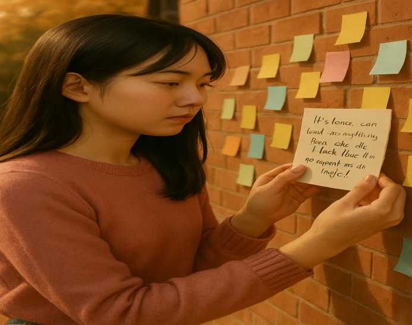

Rose posted a handwritten note: "If silence can heal everything, then why do I feel like I'm trapped in a cage?"
She left the scene and closed the comment section, choosing self-protection
She placed a voice recorder in the corner to collect the voices of others
Rose brings a chair and stays in front of the wall, offering silent companionship.